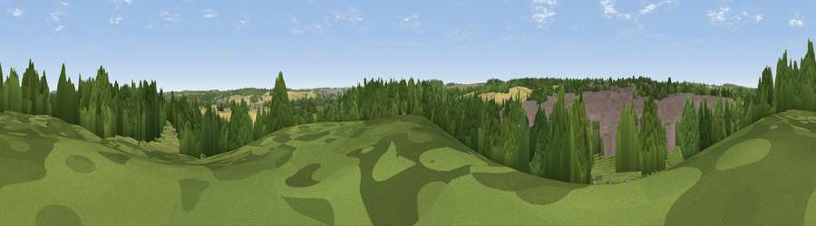

Viewpoint near Warsop Vale
#40986 in England · top 82% of its area beats it · near Warsop ValeThe view, rendered

A 360° render of this exact spot computed from the terrain model, tree cover and land cover — summer colours, afternoon light, calibrated against photographs of famous viewpoints. Real trees, hedges and buildings will differ in detail.
The panorama
Grey silhouette: terrain skyline in each direction (720 bearings, Earth curvature and refraction included). Dashed green: skyline with trees (+15 m) and buildings (+8 m) as obstacles. Blue strip: how far the ground is visible on each bearing.
Where the view opens
Wedge length = distance to the farthest visible ground on that bearing (vegetation-aware). Rings at 10, 25 and 50 km.
What fills the view
37% woodland · 28% built-up · 21% cropland · 13% grassland
Angular shares of the visible panorama (visual magnitude), not map area. Landscape diversity 0.58 (0–1 Shannon).
Key numbers
More beautiful places nearby
The staircase of upgrades: each row has a higher view potential than everything closer. Driving times are estimates from straight-line distance, calibrated against real road routing — check an actual route before setting out.
| Place | Direction | Drive | Score |
|---|---|---|---|
| Viewpoint near Pleasley Hill | SW · 3 km | ~6 min | 35.3 |
| Mansfield Woodhouse Colliery | SSW · 4 km | ~8 min | 44.4 |
| Viewpoint near Meden Vale | NE · 5 km | ~11 min | 65.2 |
| Burstheart Hill [Thoresby Colliery] | E · 10 km | ~19 min | 69.3 |
| Crich Stand | WSW · 22 km | ~37 min | 73.0 |
| Alport Height | WSW · 28 km | ~44 min | 73.9 |
| Viewpoint near Wharncliffe Side | NW · 37 km | ~56 min | 75.2 |
| Tissington Hill | WSW · 41 km | ~60 min | 75.5 |
53.19492, -1.20029 · source: screening · position refined by local search. Computed location — check access rights before visiting.